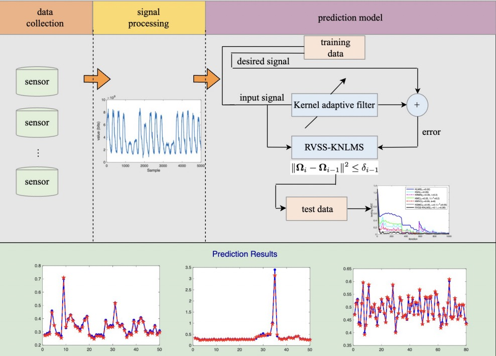
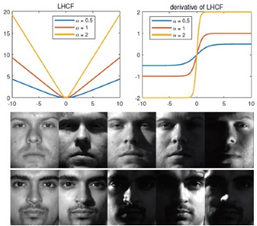
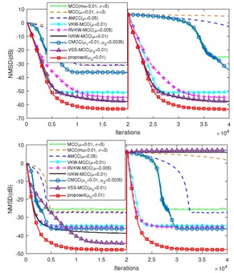
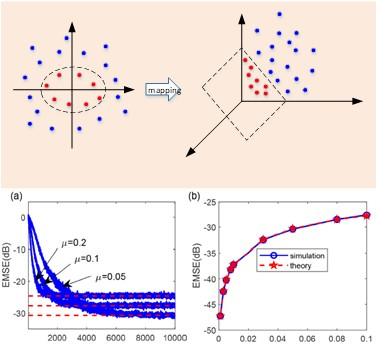
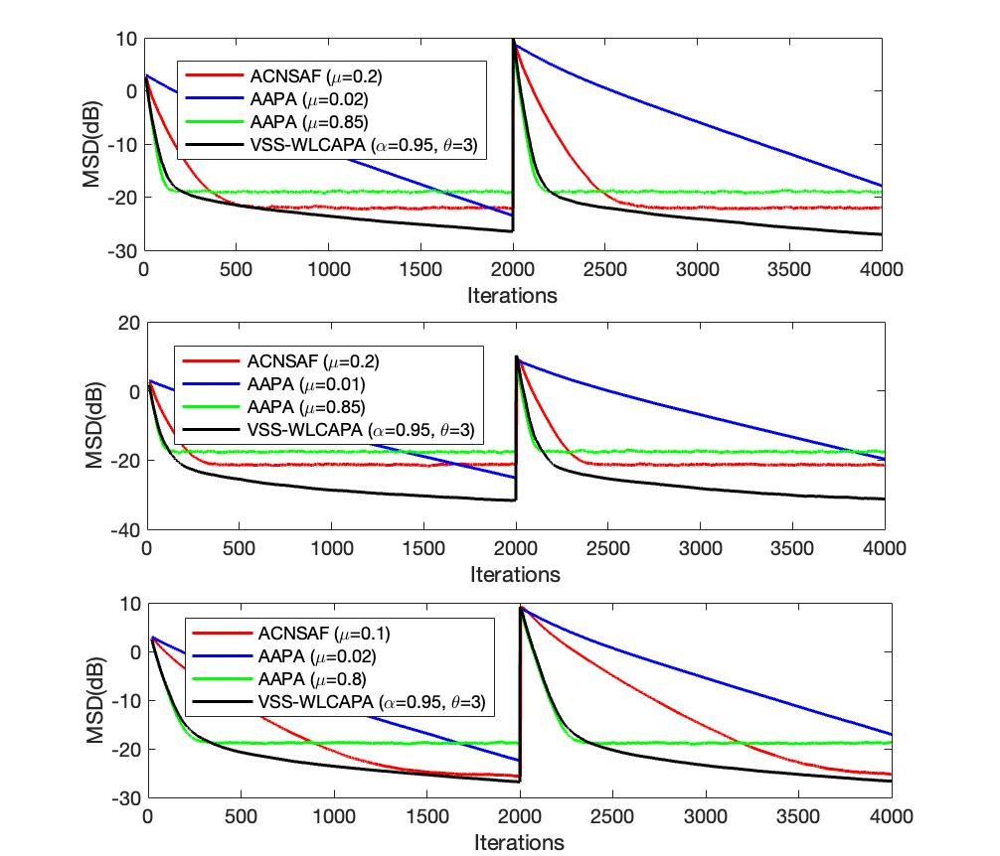

|
Long Shi
I am an assistant professor at the School of Computing and Artificial Intelligence at Southwestern University of Finance and Economics. My research interests lie at the intersection of signal processing and machine learning.
I received my Doctoral degree from the School of Electricity Engineering at Southwest Jiaotong University. From 2018 to 2019, I was a visiting student at the University of York under the supervision of Prof. Yuriy Zakharov. I have published several high-quality papers in IEEE TSP, IEEE SPL, IEEE TCSII, SP, DSP, etc. My homepage on Southwestern University of Finance and Economics can be found in myswufe.
Email /
Google Scholar /
Github /
ResearchGate /
|
|
|
Research
My research focuses on the intersection of signal processing and machine learning. Specifically, I am interested in adaptive signal processing, including algorithm optimization and applications. Additionally, I am interested in machine learning techniques such as subspace clustering, multi-view learning, multimodal learning, and reinforcement learning. Currently, I am also focusing on LLM.
|
Selected Publications
(*corresponding author)

|
An Improved Robust Kernel Adaptive Filtering Method for Time Series Prediction
Long Shi*, Ruyuan Lu, Zhuofei Liu, Jiayi Yin, Ye Chen, Jun Wang, Lu Lu
IEEE Sensors Journal, 2023
[Paper link]
[bibtex]
[code]
We propose a robust kernel adaptive filtering algorithm by limiting the energy of the weight update within a dynamic threshold.
|
|

|
Robust Subspace Clustering by Logarithmic Hyperbolic Cosine Function
Lei Cao, Long Shi*, Jun Wang, Zhendong Yang, Badong Chen
IEEE Signal Processing Letters (SPL), 2023
[Paper link]
[bibtex]
[code]
We propose a novel robust subspace clustering method for image segmentation.
|
|

|
An Efficient Parameter Optimization of Maximum Correntropy Criterion
Long Shi*, Lu Shen, Badong Chen
IEEE Signal Processing Letters (SPL), 2023
[Paper link]
[bibtex]
[code]
An efficient parameter optimization scheme simutaneously involving step-size and kernel width is proposed for MCC.
|
|

|
Robust kernel adaptive filtering for nonlinear time series prediction
Long Shi*, Jinghua Tan, Jun Wang, Qing Li, Lu Lu, Badong Chen
Signal Processing (SP), 2023
[Paper link]
We propose a robust kernel method for nonlinear time series prediction.
|
|

|
Variable Step-Size Widely Linear Complex-Valued Affine Projection Algorithm and Performance Analysis
Long Shi, Haiquan Zhao, Yuriy Zakharov, Badong Chen, Yaoru Yang
IEEE Transactions on Signal Processing (TSP), 2020
[Paper link]
[bibtex]
[code]
We propose a novel step-size scheme for complex-valued APA.
|
|
Honors and Awards
Outstanding Doctoral Dissertation of Southwest Jiaotong University, 2021.
National Scholarship for Doctoral Students, 2018 and 2019.
National Scholarship for Master's Students, 2016.
Huawei Scholarship, 2017.
|
|
Leading/Participating Projects
Research on Entropy-based Complex-valued Adaptive Filtering
Role: PI
Source: National Natural Science Foundation of China (NSFC)-62201475, 2023-2025.
Stock Price Prediction Model Based on Multimodal Data Fusion
Role: PI
Source: Young Teacher Development Project of Southwestern University of Finance and Economics.
Robust Online Learning Algorithms for Price Prediction in Futures High-Frequency Trading
Role: PI
Source: Key Project of Research Start-up Funding for Talents Introduced by Southwestern University of Finance and Economics.
Distributed Filtering Algorithm for Non-Gaussian Noise Environment
Role: PI
Source: Doctoral Innovation Fund Project of Southwest Jiaotong University.
Efficient and Robust Distributed Constrained Adaptive Filtering: New Methods and Applications
Role: Participant
Source: National Natural Science Foundation of China (NSFC)-61871461, 2019-2022.
New Methods and Applications of Multi-Kernel Adaptive Filtering
Role: Participant
Source: National Natural Science Foundation of China (NSFC)-61571374, 2016-2019.
|
|
Teachings
Subject Lecturer, Data Science, Spring.
Subject Lecturer, Design and Analysis of Advanced Algorithms, Fall.
Subject Lecturer, Design and Analysis of Algorithms, Spring.
Subject Lecturer, Foundations of Computer Systems, Fall, 2021, 2022.
Subject Lecturer, Introduction to Artificial Intelligence, Spring, 2021.
|
Professional Activities
Journal/Conference Reviewer
Reviewer for Signal Processing (SP).
Reviewer for Digital Signal Processing (DSP).
Reviewer for IEEE Signal Processing Letters (IEEE SPL).
Reviewer for Biomedical Signal Processing and Control.
Reviewer for IEEE Access.
Reviewer for Circuits, Systems, and Signal Processing.
Reviewer for AEU-International Journal of Electronics and Communications.
Talk
Multi-Kernel Learning in the Context of Multi-view: Research and Challenges, Nanjing Audit University, 2022.
|
|
{kind=link}